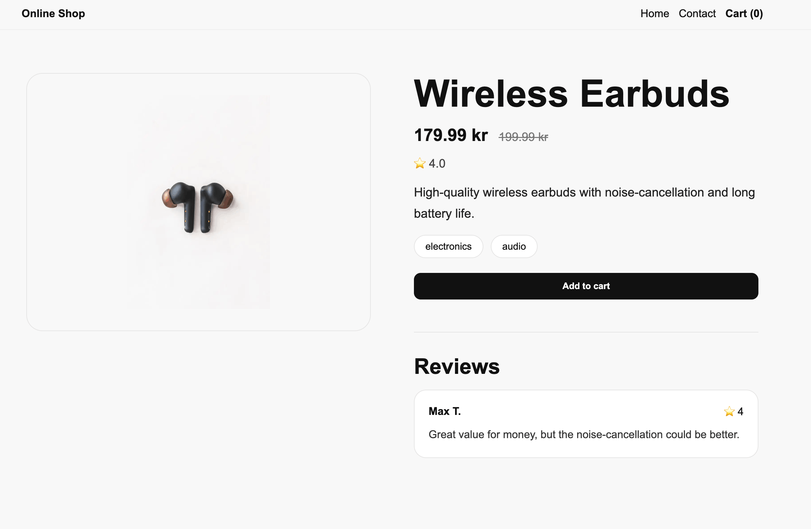

JavaScript Frameworks

Project Overview
This project was completed as part of the JavaScript Frameworks course at Noroff. The assignment was to build a fully functional online shop using modern JavaScript framework tools.
I built the project with Next.js, React and TypeScript. The application fetches products from the Noroff API and allows users to browse products, search for items, view product details, add products to a shopping cart and complete a checkout process.
Assignment Requirements
The assignment focused on using a JavaScript framework to create a dynamic and functional e-commerce application.
As part of the assignment I:
- Built the project using Next.js, React and TypeScript
- Fetched product data from the Noroff API
- Created a product listing page
- Created individual product detail pages
- Added search functionality
- Implemented cart functionality
- Created a checkout flow
- Displayed product reviews, prices, discounts and tags
What I Learned
Through this project I gained more experience with React and Next.js. I learned how to structure pages, create reusable components and work with API data in a framework-based project.
I also improved my understanding of TypeScript, dynamic routes, product data rendering and how to build user-friendly e-commerce functionality.
Portfolio Improvements
For Portfolio 2, I reviewed the project and improved the product details page to make it more polished and professional.
- Improved the product details page layout
- Increased spacing between image, product information and reviews
- Improved product image presentation with better sizing and padding
- Refined typography for the product title, price and description
- Improved tag styling and product information hierarchy
- Made the reviews section cleaner and easier to read
- Improved the responsive layout for smaller screens